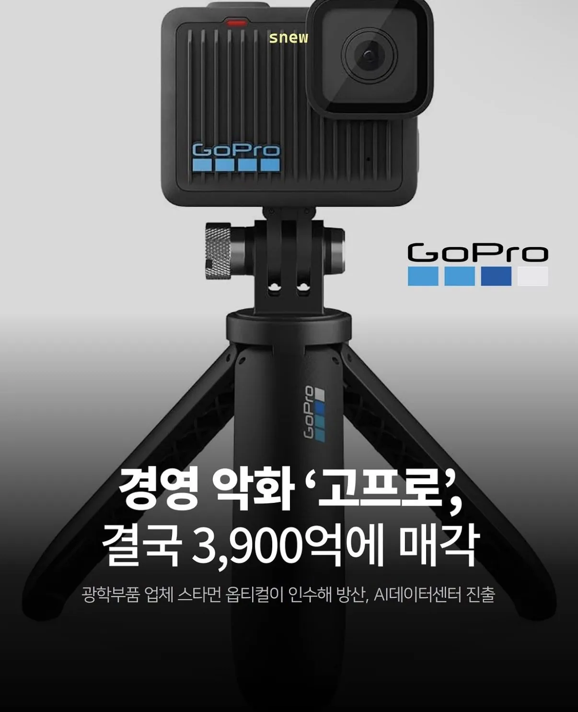
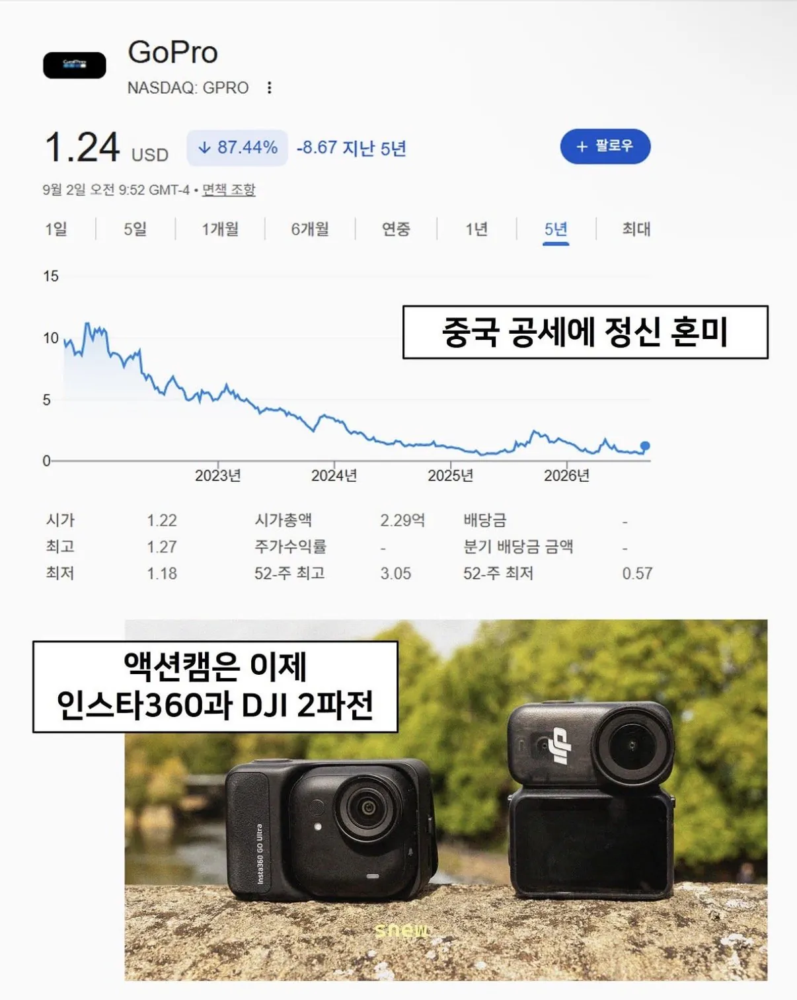

망함


망함
고프로 써봤는데 저조도 ㅂㅅ에 액션캠으로써 기능도 그닥뭐 가격대비 핸드폰하나 중고구해서 짐벌쓰는게 더좋음. 오래쓰면 발열에 디스플레이 ㅈ만해서 뭐하는건지도 모를때가많음
요즘 어지간한 전자제품 혁신은 참깨에서 나옴 ㅅㅂ
남들이 잘 안하는 프로젝터같은 분야도 지들끼리 조온나 경쟁해서 세계 잠식 중
이번에 새로나온 고프로 미션1도
유튜브 보니까
포켓3 보다도 화질 구림ㅋㅋ 진짜 어이가없더라
짐벌캠이랑은 화각도 다르고 물리 손떨방과 다르게 전자식 안정화로 깎아먹는 건 액션캠이면 당연함... 고프로라 문제인 게 아님
그리고 화질이 별로면 왜 fpv 빌드에 고프로 12같은거 쓰겠음? 5K급 고해상도에서 자연스러운 렌더링, 비트레이트 널널하게 후보정 위해서 주는 건 고프로가 여전히 우세임.
액4 에이스프로 1 시점부터 발열,배터리,저조도에서 심각하게 딸려서 점유율 나락 간 거지.
스키타면서 영상찍어주고 할건데 뭐가좋음??
Dji 1황
병신 고프로새끼들 꼬숩다 ㅋ ㅋ ㅋ ㅋㅋ
포켓뭐시기가 dji드론용커메라 기술에탑재때매 앵글 기가막히던데 ㅋㅋㅋㅋ 중국산 1황임 최고급부터 저가부터 다먹음
2파전은 무슨 그냥 오즈모가 다쓸었지
배짱 부리더니 ㅋㅋ
얘네 망한건 인과응보
당연한 수순이었음
이 씹새들 2010년대 초반에 지들 잘나간다고 꺼드럭 오졌는데 잘망했다.
선점 효과를 믿고 개판치더니 결국 갔네 ㅋㅋ
난 개인적으로 폰이 더 낫더라
적절하다.